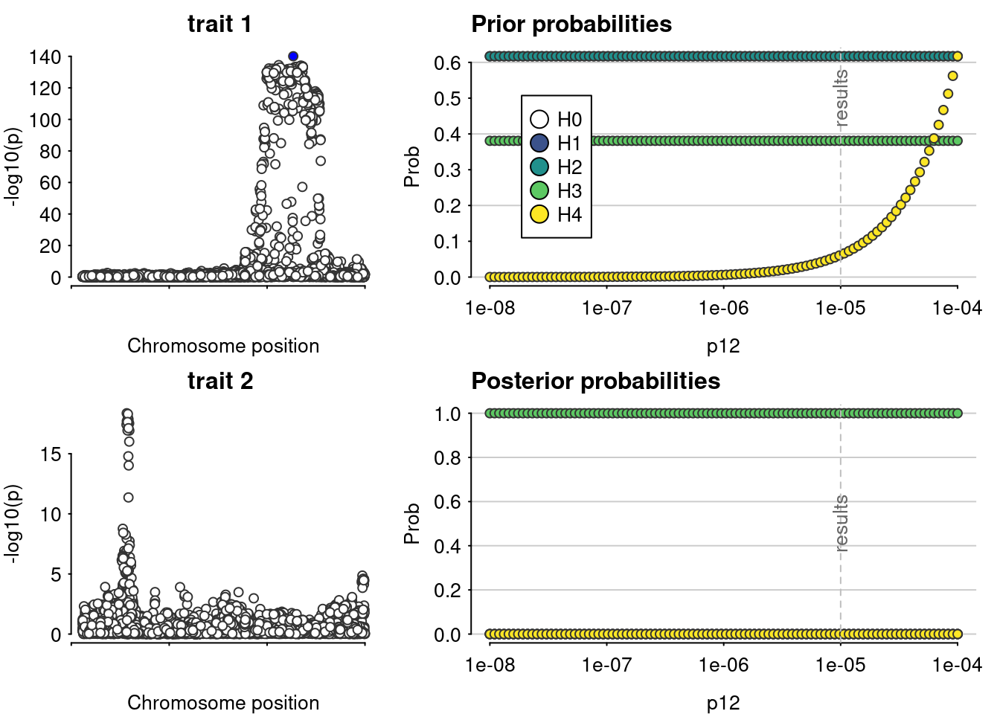

JAK2
Tea Heikkilä, Emilia Kaiser & Jaakko Koskenniemi
2022-24-05
Last updated: 2023-05-04
Checks: 7 0
Knit directory: T1DSCREEN/
This reproducible R Markdown analysis was created with workflowr (version 1.7.0). The Checks tab describes the reproducibility checks that were applied when the results were created. The Past versions tab lists the development history.
Great! Since the R Markdown file has been committed to the Git repository, you know the exact version of the code that produced these results.
Great job! The global environment was empty. Objects defined in the global environment can affect the analysis in your R Markdown file in unknown ways. For reproduciblity it’s best to always run the code in an empty environment.
The command set.seed(20220313) was run prior to running
the code in the R Markdown file. Setting a seed ensures that any results
that rely on randomness, e.g. subsampling or permutations, are
reproducible.
Great job! Recording the operating system, R version, and package versions is critical for reproducibility.
Nice! There were no cached chunks for this analysis, so you can be confident that you successfully produced the results during this run.
Great job! Using relative paths to the files within your workflowr project makes it easier to run your code on other machines.
Great! You are using Git for version control. Tracking code development and connecting the code version to the results is critical for reproducibility.
The results in this page were generated with repository version fc32168. See the Past versions tab to see a history of the changes made to the R Markdown and HTML files.
Note that you need to be careful to ensure that all relevant files for
the analysis have been committed to Git prior to generating the results
(you can use wflow_publish or
wflow_git_commit). workflowr only checks the R Markdown
file, but you know if there are other scripts or data files that it
depends on. Below is the status of the Git repository when the results
were generated:
Ignored files:
Ignored: .Rhistory
Ignored: .Rproj.user/
Ignored: data/README_cis_eqtl.txt
Ignored: data/README_cis_eqtl_AF.txt
Ignored: data/cis-EQTL-AF.txt
Ignored: data/cis_eqtl_sumstats/2019-12-11-cis-eQTLsFDR-ProbeLevel-CohortInfoRemoved-BonferroniAdded.txt
Ignored: data/cis_eqtl_sumstats/2019-12-11-cis-eQTLsFDR0.05-ProbeLevel-CohortInfoRemoved-BonferroniAdded.txt/
Ignored: data/cis_eqtl_sumstats/cis-eQTL-SMR_20191212.tar.gz
Ignored: data/cis_sumstats/2018-07-18_SNP_AF_for_AlleleB_combined_allele_counts_and_MAF_pos_added.txt
Ignored: refs/
Untracked files:
Untracked: IL2RA_debug.Rmd
Unstaged changes:
Modified: analyses/index.Rmd
Note that any generated files, e.g. HTML, png, CSS, etc., are not included in this status report because it is ok for generated content to have uncommitted changes.
These are the previous versions of the repository in which changes were
made to the R Markdown (analyses/JAK2.Rmd) and HTML
(docs/JAK2.html) files. If you’ve configured a remote Git
repository (see ?wflow_git_remote), click on the hyperlinks
in the table below to view the files as they were in that past version.
| File | Version | Author | Date | Message |
|---|---|---|---|---|
| Rmd | fc32168 | jkoskenniemi | 2023-05-04 | wflow_publish(c("analyses/IL6R.Rmd", "analyses/JAK1.Rmd", "analyses/JAK2.Rmd", |
| html | b49016a | jkoskenniemi | 2023-05-04 | Build site. |
| html | c541480 | jkoskenniemi | 2023-05-04 | Build site. |
| html | 1b4db48 | jkoskenniemi | 2023-05-03 | Build site. |
| Rmd | d1d186c | jkoskenniemi | 2023-05-03 | Added comment on eQTL data |
| html | e0d3987 | jkoskenniemi | 2023-04-28 | Build site. |
| html | c8d146f | Jaakko Koskenniemi | 2023-04-26 | Build site. |
| html | ef6d816 | Jaakko Koskenniemi | 2023-04-26 | Build site. |
| Rmd | 2db4317 | Jaakko Koskenniemi | 2023-04-26 | First commit |
| html | 24d77f3 | Jaakko Koskenniemi | 2022-11-05 | Build site. |
| Rmd | e86595d | Jaakko Koskenniemi | 2022-11-05 | wflow_publish(c("analyses/CRP.Rmd", "analyses/CXCL10.Rmd", "analyses/IL2RA.Rmd", |
Load packages and import data
library(tidyverse)-- Attaching core tidyverse packages ------------------------ tidyverse 2.0.0 --
v dplyr 1.1.2 v readr 2.1.4
v forcats 1.0.0 v stringr 1.5.0
v ggplot2 3.4.2 v tibble 3.2.1
v lubridate 1.9.2 v tidyr 1.3.0
v purrr 1.0.1
-- Conflicts ------------------------------------------ tidyverse_conflicts() --
x dplyr::filter() masks stats::filter()
x dplyr::lag() masks stats::lag()
i Use the conflicted package (<http://conflicted.r-lib.org/>) to force all conflicts to become errorslibrary(data.table)
Attaching package: 'data.table'
The following objects are masked from 'package:lubridate':
hour, isoweek, mday, minute, month, quarter, second, wday, week,
yday, year
The following objects are masked from 'package:dplyr':
between, first, last
The following object is masked from 'package:purrr':
transposelibrary(coloc)This is a new update to coloc.library(TwoSampleMR)TwoSampleMR version 0.5.6
[>] New: Option to use non-European LD reference panels for clumping etc
[>] Some studies temporarily quarantined to verify effect allele
[>] See news(package='TwoSampleMR') and https://gwas.mrcieu.ac.uk for further detailslibrary(ggpubr)
library(ieugwasr)API: public: http://gwas-api.mrcieu.ac.uk/
Attaching package: 'ieugwasr'
The following object is masked from 'package:TwoSampleMR':
ld_matrixlibrary(rio)
library(here)here() starts at C:/Users/jajoko/Documents/T1DSCREENhere::i_am("analyses/JAK2.Rmd")here() starts at C:/Users/jajoko/Documents/T1DSCREENeQTL
Load packages and import data
JAK2_eqtl <- read_exposure_data("data/export/JAK2_eqtl_TwoSampleMR.csv", sep=",")Warning in format_data(as.data.frame(exposure_dat), type = "exposure", snps =
NULL, : se column is not numeric. Coercing...Warning in format_data(as.data.frame(exposure_dat), type = "exposure", snps = NULL, : The following SNP(s) are missing required information for the MR tests and will be excluded
rs6476941
rs2149556
rs7036034
rs7858245
rs10974990
rs12340344
rs7040922
rs12115301
rs7029244
rs7874624
rs1328919
rs62541916
rs1581927
rs1590803
rs61131640
rs7038813
rs12344116
rs9657576
rs7030853
rs60460912
rs1590804
rs10815171
rs12343038
rs7022901
rs12340333
rs7036536
rs7040806
rs12340303
rs10758674
rs7029084
rs61461940
rs12338854
rs7861599
rs12340379
rs12339666
rs10116823
rs57299248
rs12001334
rs7871515
rs7032616
rs2094619
rs12341844
rs10974993
rs12684720
rs10974987
rs11791281
rs7047795
rs7036476
rs10115962
rs57698263
rs10815167
rs12337480
rs10815166
rs10974935
rs12337481
rs10115335
rs76960049
rs10815143
rs7850425
rs10121316
rs61284219
rs10974982
rs1571438
rs10115464
rs2094393
rs10974922
rs12336875
rs7470337
rs12352285
rs7040136
rs7039518
rs2149552
rs2094622
rs7046077
rs11787793
rs7038687
rs10815149
rs12337904
rs10815158
rs7863219
rs10974972
rs7046511
rs11999076
rs7849717
rs10815157
rs1360063
rs10815150
rs7035251
rs7045491
rs1328918
rs7847141
rs10123980
rs7857730
rs7038763
rs3780373
rs10118930
rs10815148
rs10974914
rs7850484
rs12353218
rs7030260
rs7851455
rs72699590
rs11788164
rs28378223
rs7034878
rs3780372
rs7852755
rs10117501
rs12335663
rs62541531
rs7025540
rs10974984
rs966871
rs3824433
rs7023146
rs10121077
rs2149555
rs59225790
rs10815153
rs10217652
rs12339774
rs11795305
rs1328917
rs10815154
rs10120763
rs2209773
rs7032785
rs10974960
rs7857081
rs7022333
rs10758673
rs12335546
rs10283563
rs62543572
rs7868130
rs62543560
rs9695933
rs7469563
rs2225125
rs62541959
rs62541556
rs7870694
rs12342421
rs10815165
rs7019912
rs62541957
rs10974910
rs57707737
rs149390964
rs9695934
rs62541958
rs7028112
rs1536798
rs62541543
rs57204002
rs7875265
rs72699568
rs12336577
rs10974912
rs1327494
rs4495487
rs11791350
rs59668095
rs12343374
rs58345215
rs3780365
rs12337134
rs10815145
rs72701605
rs1028912
rs10121491
rs1034072
rs7037207
rs11999928
rs7847294
rs12340617
rs111573904
rs7043371
rs12340895
rs7851556
rs62541534
rs12682970
rs7871070
rs2149553
rs12686652
rs10974938
rs7859390
rs62541541
rs1159782
rs12352022
rs11790841
rs60221565
rs10117459
rs12343065
rs10974939
rs3780367
rs62541944
rs12340866
rs10118789
rs3780371
rs10117565
rs3780377
rs62541899
rs62541903
rs10974980
rs10115970
rs117896567
rs10115518
rs10815164
rs12347727
rs2381195
rs62541538
rs11792531
rs62541915
rs10974983
rs11788834
rs2274649
rs7032706
rs12345127
rs1576271
rs62541945
rs11788949
rs11788790
rs10115172
rs3780374
rs62543877
rs10815144
rs72701654
rs12340827
rs10124627
rs10974979
rs62541539
rs12348771
rs3780369
rs3780368
rs62541540
rs59384377
rs10974916
rs12340894
rs11789744
rs10974964
rs7045000
rs3780370
rs2104594
rs10116560
rs10283730
rs150926910
rs150105389
rs10283564
rs4593605
rs7869668
rs11794778
rs6476939
rs10117591
rs7852988
rs2230724
rs12343867
rs67006981
rs149389628
rs2209774
rs10974915
rs62543863
rs2149560
rs10123976
rs12346093
rs7019858
rs10815147
rs12344629
rs4527935
rs12349918
rs3780366
rs12349785
rs17425819
rs17425637
rs10115312
rs10974969
rs2381213
rs2183137
rs16922772
rs10815159
rs10974963
rs11506661
rs10974921
rs11794708
rs7850294
rs62541532
rs12682672
rs3780378
rs7875908
rs1322222
rs7046736
rs12352214
rs10122037
rs11793886
rs6476945
rs884132
rs10974944
rs3780381
rs10815146
rs11788963
rs7865719
rs10123873
rs72699574
rs10114315
rs6476946
rs16922576
rs11790596
rs16922786
rs7869015
rs4560849
rs10974952
rs7043489
rs7874785
rs2224571
rs10491650
rs6476947
rs16922779
rs17492549
rs10491651
rs62543574
rs62543573
rs6476948
rs7856773
rs7033052
rs10975024
rs10283734
rs12349113
rs11506663
rs1120679
rs6476953
rs6476950
rs11792629
rs4358852
rs7027871
rs10975031
rs62543876
rs10120337
rs7025005
rs7874495
rs113683988
rs7035915
rs7035456
rs12342390
rs1853221
rs11790680
rs10283467
rs7868706
rs7850228
rs10758677
rs10815172
rs7858422
rs10118267
rs7847811
rs7859361
rs10283473
rs10975028
rs10975027
rs1590268
rs6476956
rs10123322
rs11506668
rs7019418
rs10118434
rs7848312
rs112603351
rs6476957
rs7859286
rs2146040
rs1830610
rs28872016
rs10975023
rs6476949
rs1575283
rs6476952
rs11506292
rs7870536
rs2038588
rs2208685
rs11506293
rs72703608
rs12350079
rs7023639
rs12351715
rs7045342
rs6476955
rs12349508
rs4500135
rs13285894
rs62541529
rs2381215
rs7856912
rs72701682
rs4372063
rs10975033
rs1322224
rs7043634
rs11793659
rs2146041
rs4587378
rs72701680
rs4342662
rs10974974
rs36051895
rs75354820
rs75032480
rs10481522
rs10815169
rs13440043
rs12351277
rs7034753
rs72699592
rs2181115
rs7862042
rs10974978
rs1575285
rs2031906
rs1555476
rs11999802
rs6476951
rs61657529
rs10975009
rs3780383
rs1575281
rs10975003
rs3780382
rs16922785
rs9987451
rs17426903
rs7036761
rs16922773
rs7848872
rs10975029
rs12343727
rs1536800
rs12347799
rs12720
rs4425810
rs147084794
rs4142064
rs10429491
rs1887428
rs10156475
rs7867137
rs7036833
rs60768043
rs10115208
rs10114531
rs11506660
rs7849191
rs10758669
rs7849067
rs7861755
rs7861763
rs10974900
rs2093446
rs2093447
rs2093448
rs2104166
rs10119004
rs4008433
rs10758670
rs10156618
rs2274472
rs10974913
rs12001578
rs2031752
rs3808850
rs7468147
rs7862851
rs7862852
rs1887426
rs113657238
rs10815141
rs10974892
rs1327497
rs1887425
rs7848416
rs1322223
rs10974967
rs10974897
rs78610467
rs7041547
rs62554837
rs75774657
rs7035015
rs1575284
rs148462161
rs11791395
rs58367852
rs62541511
rs116994058
rs10974975
rs12683801
rs10815140
rs11794946
rs10974976
rs11791507
rs12377744
rs141406245
rs10974905
rs2031754
rs12377160
rs7032169
rs10974865
rs10974977
rs1327500
rs59966455
rs72701653
rs112324541
rs2381216
rs77551840
rs16922908
rs10974973
rs2381194
rs113786699
rs2182726
rs62541542
rs62541558
rs113353229
rs75448287
rs62543884
rs75035022
rs62543904
rs9969735
rs10974837
rs78061489
rs10974835
rs9942887
rs62541503
rs7854773
rs10975043
rs148595697
rs77605397
rs6476959
rs7864244
rs2381180
rs7853475
rs10815112
rs10815130
rs7849277
rs139261028
rs10758678
rs1555477
rs12684204
rs75589511
rs146701017
rs16922344
rs144439143
rs10815119
rs10217321
rs715769
rs10115467
rs10815121
rs1410006
rs1571220
rs59774261
rs7862645
rs7867268
rs7020559
rs16922337
rs7023498
rs6476921
rs62543879
rs9942905
rs68158363
rs7025867
rs7025869
rs7874647
rs76521383
rs10815110
rs7853655
rs7856995
rs7856073
rs4291328
rs6476919
rs4541986
rs4495484
rs2025169
rs7870381
rs74332040
rs6476920
rs1327495
rs1327496
rs78745832
rs7864782
rs4428717
rs1327492
rs72701688
rs4574902
rs116866937
rs7863288
rs7862378
rs4742060
rs7872877
rs62557688
rs10481523
rs61399403
rs7854664
rs7868954
rs148091490
rs77533513
rs35774855
rs1475105
rs2297136
rs9969783
rs77845561
rs1407387
rs10815102
rs9721857
rs10119552
rs10974873
rs7868967
rs7853852
rs6476958
rs10974893
rs10974887
rs10975039
rs17803986
rs11999445
rs1407388
rs7021993
rs1971472
rs4742053
rs1971473
rs10974874
rs7033053
rs7032292
rs10815125
rs10975041
rs13288137
rs1327499
rs142940451
rs10974871
rs7868186
rs10815126
rs1041215
rs1327490
rs2224572
rs138578571
rs12684195
rs7022514
rs7046183
rs4742054
rs1571222
rs7040940
rs4742076
rs10815123
rs62541502
rs7047392
rs4742058
rs4742055
rs7868200
rs62541510
rs7869831
rs12235675
rs75574230
rs2208686
rs149460882
rs2146043
rs10815136
rs150260966
rs1410008
rs7862098
rs1575286
rs4742056
rs719673
rs144666602
rs6476929
rs7873020
rs10975045
rs7037047
rs9775690
rs10974877
rs62541491
rs41316003
rs183314067
rs7029647
rs4742057
rs72699540
rs10974858
rs148858951
rs146450005
rs17718680
rs7852291
rs7034721
rs4740805
rs10815124
rs3824439
rs117829760
rs148465266
rs117858295
rs7035298
rs76778936
rs148489539
rs1410004
rs10815107
rs12156457
rs10974857
rs6476931
rs17501156
rs4452849
rs10974879
rs10739071
rs7038475
rs10974859
rs10815111
rs7037557
rs10974847
rs2182725
rs12349020
rs13286824
rs149331299
rs7851572
rs10815228
rs139621882
rs10975129
rs4742100
rs7853905
rs7027180
rs12685848
rs118121949
rs4742078
rs148602745
rs10815232
rs10758668
rs58817806
rs143206068
rs116968409
rs4742099
rs7030147
rs7873651
rs10974880
rs10758665
rs144745077
rs4481663
rs4742102
rs140379169
rs62560216
rs140533307
rs3968
rs10121574
rs188285574
rs117275321
rs138648167
rs55774436
rs4742098
rs10815230
rs7875194
rs10815229
rs7043593
rs10125854
rs2381212
rs116945594
rs10974846
rs10125633
rs62557661
rs2890657
rs62559127
rs13297881
rs3780394
rs10974851
rs10975037Warning in format_data(as.data.frame(exposure_dat), type = "exposure", snps =
NULL, : None of the provided SNPs can be used for MR analysis, they are missing
required information.JAK2_T1D <- read_outcome_data("data/export/JAK2_T1D_TwoSampleMR.csv", sep=",")
JAK2 <- harmonise_data(JAK2_eqtl, JAK2_T1D)Harmonising Whole blood JAK2 mRNA (4vucPG) and Risk of type 1 diabetes (xN25Oe)Removing the following SNPs for being palindromic with intermediate allele frequencies:
rs10114548, rs10118317, rs10118468, rs10121225, rs10283872, rs1028912, rs1034531, rs10481522, rs10739030, rs10739058, rs10758591, rs10758645, rs10758700, rs10758702, rs10758704, rs10758706, rs10814847, rs10814894, rs10814951, rs10814972, rs10815009, rs10815146, rs10815258, rs10815273, rs10974345, rs10974495, rs10974520, rs10974560, rs10974566, rs10974897, rs10975056, rs10975263, rs10975266, rs1112114, rs12002985, rs12235675, rs12379291, rs12379318, rs1327496, rs13283292, rs13288897, rs184205, rs1971473, rs2104173, rs2760413, rs2760416, rs296842, rs296843, rs296849, rs301462, rs301485, rs367147, rs376208, rs378809, rs3858043, rs3858046, rs386616, rs390612, rs406455, rs409704, rs419083, rs4237150, rs4286995, rs4338160, rs4451360, rs453852, rs4740754, rs4740786, rs4741895, rs4741965, rs4741982, rs4741995, rs62543876, rs6415794, rs6476839, rs6476889, rs6476939, rs6476968, rs6915, rs7020394, rs7020673, rs7022369, rs7023770, rs7024686, rs7025900, rs7025968, rs7030195, rs7033052, rs7036458, rs7039093, rs7041581, rs7043371, rs7045178, rs7045196, rs751591, rs7851538, rs7853035, rs7853682, rs7853852, rs7854664, rs7857194, rs7865209, rs7869643, rs7871343, rs7872075, rs806053, rs806056, rs822336, rs841975, rs958480, rs9775228Manhattan plots
#create Manhattan plots with vertical lines indicating the selected area (see below 2.4)
JAK2_eqtl.fig <-
JAK2 %>%
ggplot(aes(x = pos.exposure/1000, y=-log10(pval.exposure))) +
geom_point()+
geom_hline(yintercept=8, linetype="dashed")+
ggtitle("GWAS of JAK2 gene expression in blood") +
ylab("-log10(p)") +
xlab(NULL)
JAK2_T1D.fig <-
JAK2 %>%
ggplot()+
geom_point(mapping=aes(x = pos.exposure/1000, y=-log10(pval.outcome))) +
geom_hline(yintercept=8, linetype="dashed")+
# geom_vline(xintercept=36.9e6/1000, linetype="dashed")+
# geom_vline(xintercept=37.3e6/1000, linetype="dashed")+
ggtitle("GWAS of risk of T1D") +
ylab("-log10(p)") +
xlab("position(kbp)")
#Obtain range for figure of gene
layer_scales(JAK2_T1D.fig)$x$range$range[1] 4056.953 6056.468JAK2_gene.fig <-
ggplot(data = JAK2) +
geom_blank() +
geom_segment(x=37521.878, xend=37571.094, y=1, yend=1, linewidth = 2) +
annotate("text", label = "JAK2",
x= (37521.878 + 37571.094) / 2, y=1, hjust = 0.5, vjust = -1) +
xlim(36521.878, 38571.094) +
ylim(0.75, 2) +
ylab(NULL) + xlab(NULL) +
theme(axis.text.y = element_blank(), axis.ticks.y = element_blank(),
panel.grid.major.y = element_blank(),
panel.grid.minor.y = element_blank())
fig_JAK2_manhattan <- ggarrange(JAK2_gene.fig, JAK2_eqtl.fig, JAK2_T1D.fig,
heights = c(1, 3, 3), nrow = 3,
ncol = 1, align = "hv")
# ggsave("figures/JAK2-manhattan-combined-fig.pdf",
# height = 6, width = 8, units = "in")Coloc assuming 1 causal variant
#recode MAF
JAK2 <- JAK2 %>%
mutate(maf.exposure = ifelse(eaf.exposure < 0.5, eaf.exposure, 1-eaf.exposure)) %>%
mutate(maf.outcome = ifelse(eaf.outcome < 0.5, eaf.outcome, 1-eaf.outcome))
colnames(JAK2) [1] "SNP" "effect_allele.exposure" "other_allele.exposure"
[4] "effect_allele.outcome" "other_allele.outcome" "beta.exposure"
[7] "beta.outcome" "eaf.exposure" "eaf.outcome"
[10] "remove" "palindromic" "ambiguous"
[13] "id.outcome" "pos.outcome" "pval.outcome"
[16] "se.outcome" "ncase.outcome" "ncontrol.outcome"
[19] "samplesize.outcome" "outcome" "mr_keep.outcome"
[22] "pval_origin.outcome" "data_source.outcome" "pval.exposure"
[25] "pos.exposure" "samplesize.exposure" "se.exposure"
[28] "exposure" "mr_keep.exposure" "pval_origin.exposure"
[31] "id.exposure" "data_source.exposure" "action"
[34] "mr_keep" "maf.exposure" "maf.outcome" D1 <- list(
type = "quant", # quantitative trait
pvalues = JAK2$pval.exposure,
N = JAK2$samplesize.exposure,
MAF = JAK2$maf.exposure,
pos = JAK2$pos.exposure,
snp = JAK2$pos.exposure,
sdY = 1)
D2 <- list(
type = "cc", # case-control trait
Beta = JAK2$beta.outcome,
varBeta = JAK2$se.outcome,
pvalues = JAK2$pval.outcome,
N = 18942+501638, # Case-control study (Chiou et al. 2021 Nature)
s = 18942/(18942+501638), # N_case/(N_case+ N_ctrl)
MAF = JAK2$maf.exposure, #eqtl used here in purpose
pos = JAK2$pos.outcome,
snp = JAK2$pos.exposure)
check_dataset(D1)NULLcheck_dataset(D2)NULLcoloc_JAK2 <- coloc.abf(D1, D2, p1 = 1e-4, p2 = 1e-4, p12 = 1e-5)PP.H0.abf PP.H1.abf PP.H2.abf PP.H3.abf PP.H4.abf
2.88e-146 2.28e-13 1.26e-133 1.00e+00 2.00e-15
[1] "PP abf for shared variant: 2e-13%"sensitivity(coloc_JAK2, "H4 > 0.7")Results fail decision rule H4 > 0.7
pQTL
JAK2_prot <- read_exposure_data("data/export/JAK2_prot_anno_TwoSampleMR.csv", sep=",")
JAK2_T1D <- read_outcome_data("data/export/JAK2_T1D_TwoSampleMR.csv", sep=",")
JAK2 <- harmonise_data(JAK2_prot, JAK2_T1D)Harmonising Serum JAK2 level (qs1g78) and Risk of type 1 diabetes (f66Ik5)Removing the following SNPs for incompatible alleles:
rs1207517620, rs141508055, rs372207026, rs372744561, rs530444901, rs539806656, rs568382606, rs571687697, rs574803352, rs576911975, rs74661850, rs75295775, rs756581954, rs759860808, rs762632985, rs766925196, rs76885790, rs770929012, rs773275069, rs773889954, rs867874883Removing the following SNPs for being palindromic with intermediate allele frequencies:
rs10114548, rs10118317, rs10118468, rs10118904, rs10121225, rs10283872, rs1028912, rs1034531, rs10481522, rs10739030, rs10739062, rs10758645, rs10758665, rs10758700, rs10758702, rs10758704, rs10758706, rs10814847, rs10814894, rs10814951, rs10814972, rs10815009, rs10815062, rs10815123, rs10815273, rs10815351, rs10974345, rs10974495, rs10974520, rs10974560, rs10974566, rs10974601, rs10974847, rs10974897, rs10975056, rs10975263, rs10975266, rs11515140, rs12002985, rs12235675, rs12379318, rs1327496, rs13283292, rs13288137, rs13288897, rs149556337, rs1556362, rs1556989, rs184205, rs1971473, rs2380947, rs2380948, rs2760413, rs2760416, rs296842, rs296843, rs296849, rs301462, rs301485, rs340891, rs367147, rs376208, rs378809, rs3858043, rs3858046, rs386616, rs3896197, rs3934283, rs406455, rs409704, rs418122, rs419083, rs422499, rs4286995, rs4291329, rs4352902, rs436300, rs4439181, rs444826, rs4481663, rs4481664, rs4484748, rs453852, rs4740754, rs4740775, rs4740786, rs4741878, rs4741880, rs4741893, rs4741895, rs4741965, rs4741982, rs4741995, rs62540578, rs62543876, rs637742, rs6415794, rs6476889, rs6476968, rs6477031, rs6477032, rs650816, rs6915, rs7020394, rs7020673, rs7022369, rs7023770, rs7024686, rs7025900, rs7025968, rs7033052, rs7036458, rs7039093, rs7043371, rs7045178, rs7045196, rs7046183, rs751591, rs7851538, rs7853035, rs7853682, rs7853852, rs7854664, rs7857194, rs7865209, rs7868186, rs7869643, rs7874642, rs7875108, rs806053, rs806056, rs822336, rs958480, rs9775228Manhattan plots
There are no GWAS hits in GWAS of JAK2 in serum, so no coloc or MR is done
#create Manhattan plots with vertical lines indicating the selected area (see below 2.4)
JAK2_prot.fig <-
JAK2 %>%
ggplot(aes(x = pos.exposure/1000, y=-log10(pval.exposure))) +
geom_point()+
geom_hline(yintercept=8, linetype="dashed")+
# geom_vline(xintercept=36.9e6/1000, linetype="dashed")+
# geom_vline(xintercept=37.3e6/1000, linetype="dashed")+
ggtitle("GWAS of JAK2 in serum") +
ylab("-log10(p)") +
xlab(NULL)
JAK2_T1D.fig <-
JAK2 %>%
ggplot()+
geom_point(mapping=aes(x = pos.exposure/1000, y=-log10(pval.outcome))) +
geom_hline(yintercept=8, linetype="dashed")+
# geom_vline(xintercept=36.9e6/1000, linetype="dashed")+
# geom_vline(xintercept=37.3e6/1000, linetype="dashed")+
ggtitle("GWAS of risk of T1D") +
ylab("-log10(p)") +
xlab("position(kbp)")
#Obtain range for figure of gene
layer_scales(JAK2_T1D.fig)$x$range$range[1] 3985.359 6128.137JAK2_gene.fig <-
ggplot(data = JAK2) +
geom_blank() +
geom_segment(x=37521.878, xend=37571.094, y=1, yend=1, linewidth = 2) +
annotate("text", label = "JAK2",
x= (37521.878 + 37571.094) / 2, y=1, hjust = 0.5, vjust = -1) +
xlim(36521.878, 38571.094) +
ylim(0.75, 2) +
ylab(NULL) + xlab(NULL) +
theme(axis.text.y = element_blank(), axis.ticks.y = element_blank(),
panel.grid.major.y = element_blank(),
panel.grid.minor.y = element_blank())
fig_JAK2_manhattan <- ggarrange(JAK2_gene.fig, JAK2_prot.fig, JAK2_T1D.fig,
heights = c(1, 3, 3), nrow = 3,
ncol = 1, align = "hv")
fig_JAK2_manhattan
# ggsave("figures/JAK2-manhattan-combined-fig.pdf",
# height = 6, width = 8, units = "in")
sessionInfo()R version 4.3.0 (2023-04-21 ucrt)
Platform: x86_64-w64-mingw32/x64 (64-bit)
Running under: Windows 10 x64 (build 14393)
Matrix products: default
locale:
[1] LC_COLLATE=Finnish_Finland.1252 LC_CTYPE=Finnish_Finland.1252
[3] LC_MONETARY=Finnish_Finland.1252 LC_NUMERIC=C
[5] LC_TIME=Finnish_Finland.1252
time zone: America/New_York
tzcode source: internal
attached base packages:
[1] stats graphics grDevices utils datasets methods base
other attached packages:
[1] here_1.0.1 rio_0.5.29 ieugwasr_0.1.5 ggpubr_0.6.0
[5] TwoSampleMR_0.5.6 coloc_5.1.0.1 data.table_1.14.8 lubridate_1.9.2
[9] forcats_1.0.0 stringr_1.5.0 dplyr_1.1.2 purrr_1.0.1
[13] readr_2.1.4 tidyr_1.3.0 tibble_3.2.1 ggplot2_3.4.2
[17] tidyverse_2.0.0 workflowr_1.7.0
loaded via a namespace (and not attached):
[1] tidyselect_1.2.0 viridisLite_0.4.2 farver_2.1.1 viridis_0.6.3
[5] fastmap_1.1.1 reshape_0.8.9 promises_1.2.0.1 digest_0.6.31
[9] timechange_0.2.0 lifecycle_1.0.3 processx_3.8.1 magrittr_2.0.3
[13] compiler_4.3.0 rlang_1.1.1 sass_0.4.6 tools_4.3.0
[17] utf8_1.2.3 yaml_2.3.7 knitr_1.42 ggsignif_0.6.4
[21] labeling_0.4.2 curl_5.0.0 plyr_1.8.8 abind_1.4-5
[25] withr_2.5.0 foreign_0.8-84 grid_4.3.0 fansi_1.0.4
[29] susieR_0.12.35 git2r_0.32.0 colorspace_2.1-0 scales_1.2.1
[33] cli_3.6.1 rmarkdown_2.21 crayon_1.5.2 generics_0.1.3
[37] rstudioapi_0.14 httr_1.4.5 tzdb_0.3.0 readxl_1.4.2
[41] cachem_1.0.8 cellranger_1.1.0 matrixStats_0.63.0 vctrs_0.6.2
[45] Matrix_1.5-4 jsonlite_1.8.4 carData_3.0-5 car_3.1-2
[49] callr_3.7.3 hms_1.1.3 mixsqp_0.3-48 rstatix_0.7.2
[53] irlba_2.3.5.1 jquerylib_0.1.4 glue_1.6.2 ps_1.7.5
[57] cowplot_1.1.1 stringi_1.7.12 gtable_0.3.3 later_1.3.1
[61] munsell_0.5.0 pillar_1.9.0 htmltools_0.5.5 R6_2.5.1
[65] rprojroot_2.0.3 evaluate_0.20 lattice_0.21-8 highr_0.10
[69] haven_2.5.2 backports_1.4.1 openxlsx_4.2.5.2 broom_1.0.4
[73] httpuv_1.6.9 bslib_0.4.2 zip_2.3.0 Rcpp_1.0.10
[77] gridExtra_2.3 whisker_0.4.1 xfun_0.39 fs_1.6.2
[81] getPass_0.2-2 pkgconfig_2.0.3